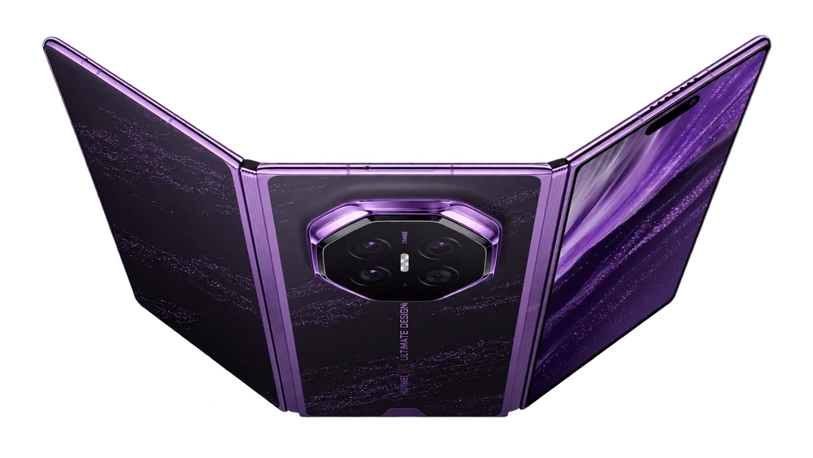
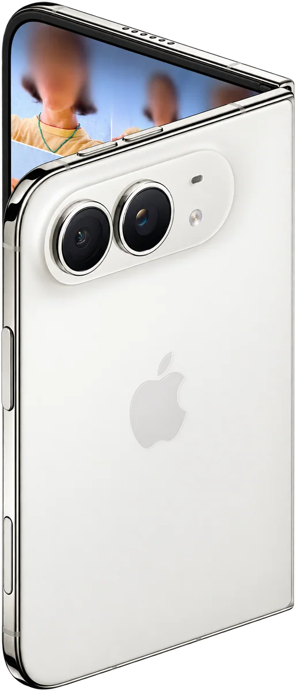
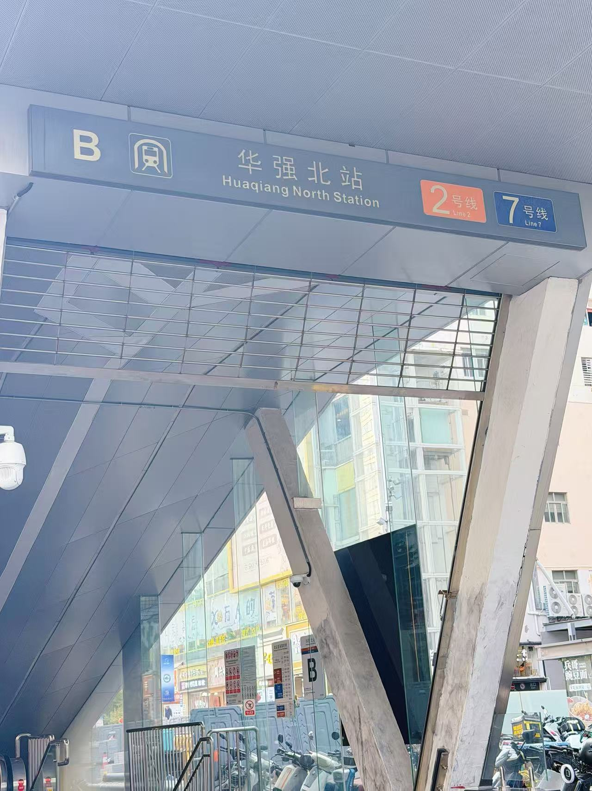
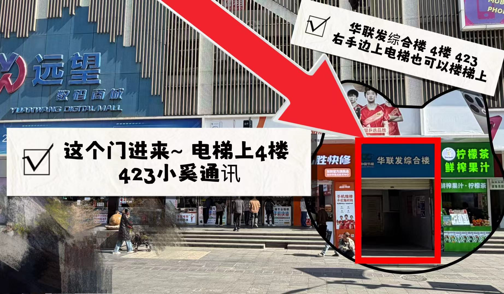
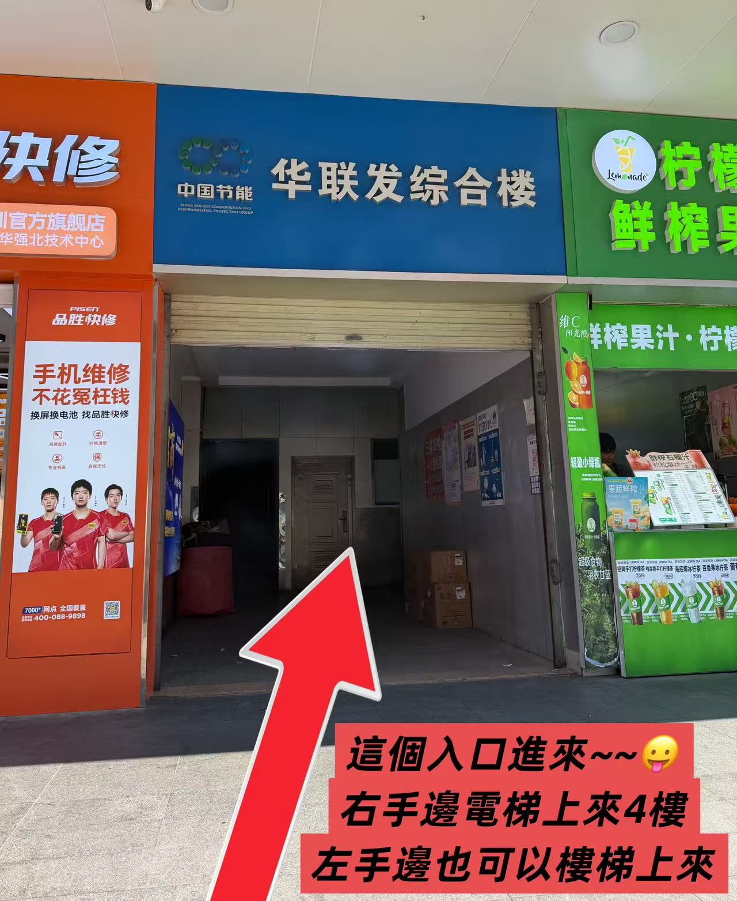
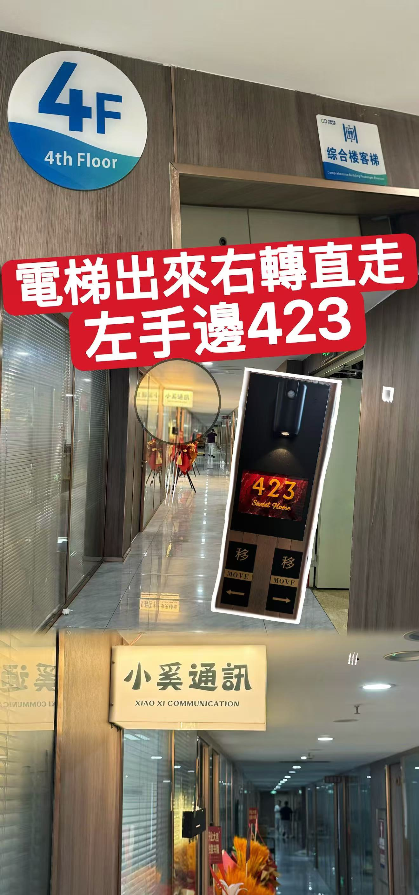
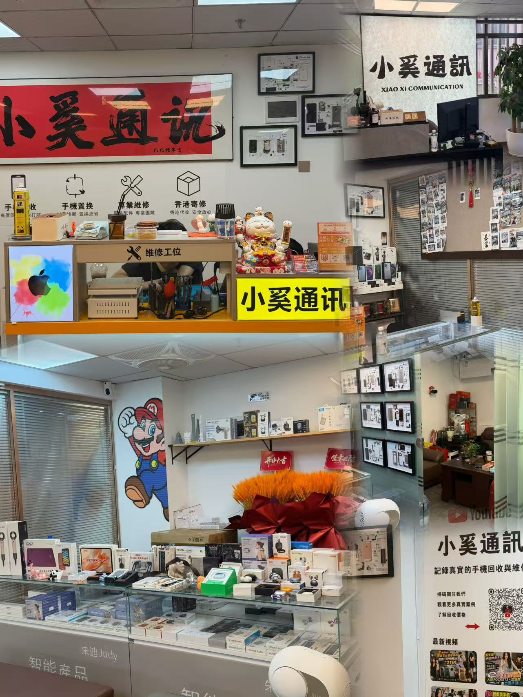
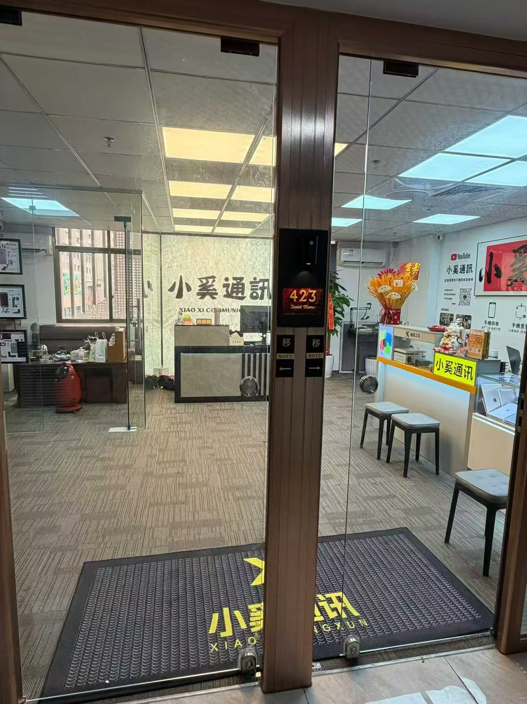

手機數碼回收
iPhone、安卓手機、平板、相機鏡頭均可估價。成色、容量、故障情況逐項說明。
查看回收參考價 ↗TRADE
手機數碼回收、專業維修，一家店都辦妥。現場檢測，價格講清楚，確認後再交易。


無論升級換機，還是設備故障，先了解價格和方案，再決定下一步。
蘋果・安卓・平板・筆記本｜高價回收 iPhone 18 系列、iPhone Dou
本頁報價為中國大陸版（國行）二手機報價，僅供參考；外版、香港版價格可能不同，詳情請微信諮詢。
安卓品牌與型號較多，如果手機有任何問題，歡迎微信諮詢。
小奚通訊 · 華聯發綜合樓 4 樓 423
華強北站 B 出口，步行約 3 分鐘
華強北站 B 出口出來，找到華聯發綜合樓，乘電梯上 4 樓，423 號就是小奚通訊。






地址：深圳市福田區華強北街道華聯發綜合樓 4 樓 423。找不到時可撥打 185 9826 4348。